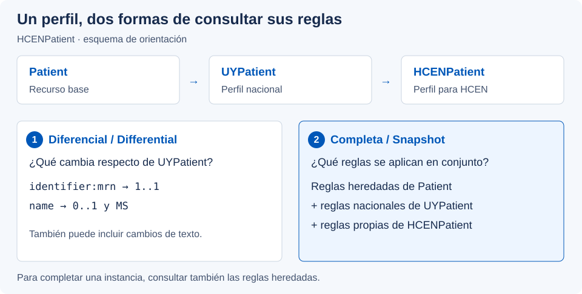
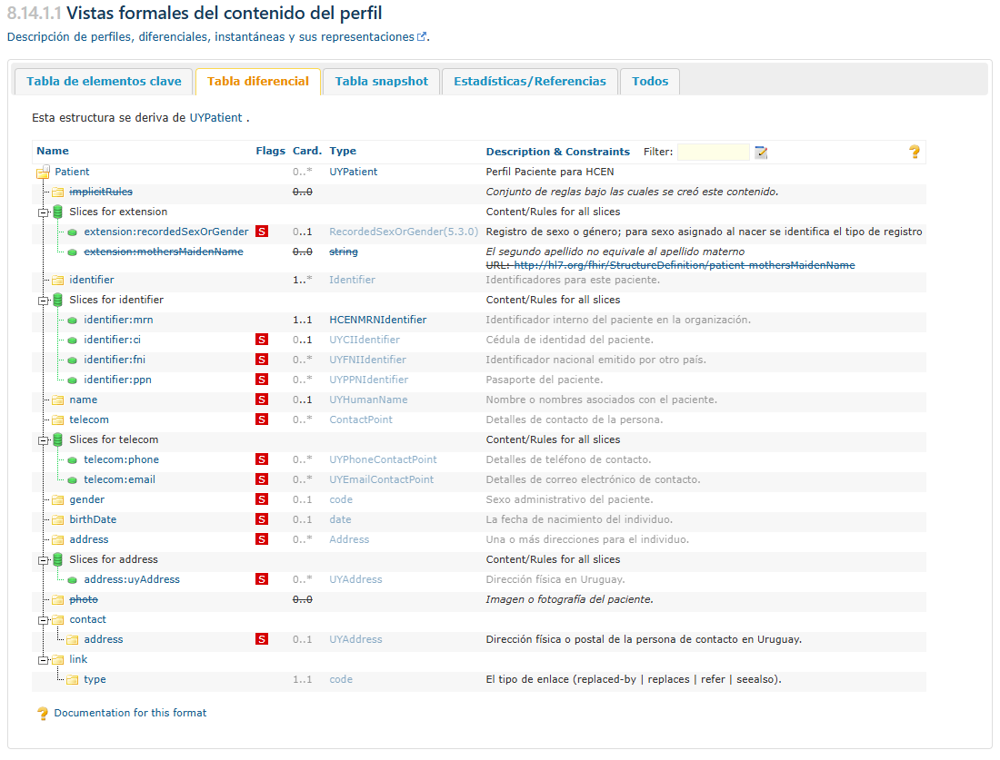
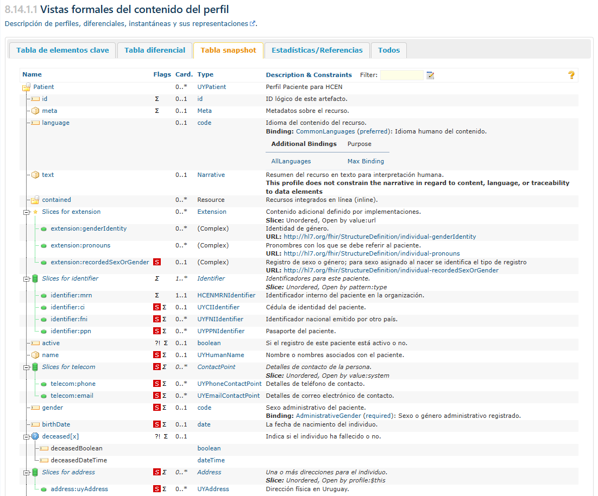
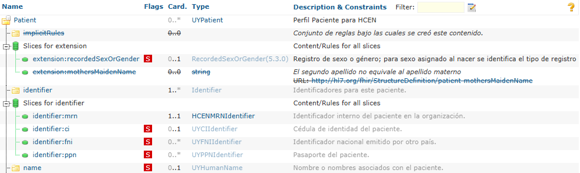
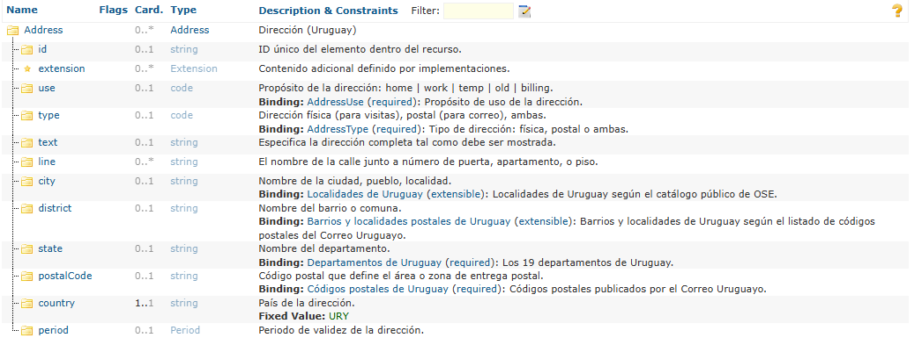

FHIR Uruguay
Base nacional Core e interoperabilidad con HCEN
FHIR Uruguay
Base nacional Core e interoperabilidad con HCEN
Guía de Implementación FHIR de Uruguay
0.1.0 - Versión inicial
FHIR Uruguay
Base nacional Core e interoperabilidad con HCEN
Guía de Implementación FHIR de Uruguay
0.1.0 - Versión inicial
Guía de Implementación FHIR de Uruguay - Local Development build (v0.1.0) built by the FHIR (HL7® FHIR® Standard) Build Tools. See the Directory of published versions
Esta página explica cómo pasar de la tabla de un perfil a decisiones concretas: qué datos incluir, cómo representarlos y qué definiciones consultar. El recorrido utiliza UYPatient y HCENPatient como ejemplos.
Si términos como recurso, perfil o extensión todavía no resultan familiares, conviene comenzar por Conceptos básicos de FHIR.
Antes de entrar en una tabla, conviene leer el título, la descripción y el perfil base. Por ejemplo, HCENPatient deriva de UYPatient: sus reglas incluyen las del perfil nacional y agregan las necesarias para HCEN.
La página ofrece distintas vistas de una misma definición. La vista de Tabla diferencial muestra los cambios respecto al recurso base. La vista de Tabla snapshot ofrece la vista completa, que reúne las reglas propias y las heredadas. Para saber cómo completar un recurso, la Tabla snapshot suele ser el mejor punto de partida.



Una fila en el diferencial no siempre implica una nueva exigencia: también puede aparecer por una traducción o una aclaración de su descripción. Si un elemento no aparece allí, puede seguir formando parte del recurso por herencia.
Otras vistas, como la de elementos clave, ayudan a enfocarse en una selección de campos. La descripción detallada permite consultar la definición completa de cada elemento, y la sección de ejemplos muestra instancias. Los rótulos pueden aparecer en español o en inglés, como Differential, Snapshot o Examples.
La tabla representa un árbol. La sangría indica qué elementos están dentro de otros: Patient.name.family se lee como «apellido, dentro del nombre, dentro del paciente».

La columna Nombre (Name) identifica el elemento, Marcas (Flags) destaca características que requieren atención, Card. indica cuántas veces puede aparecer, Tipo (Type) enlaza con su estructura y Descripción y restricciones (Description & Constraints) resume su significado y otras reglas. En la tabla publicada, seguir el enlace del elemento permite ampliar su definición.
Por ejemplo, la fila name de HCENPatient se interpreta así: puede aparecer como máximo un nombre, utiliza el perfil nacional UYHumanName y tiene Must Support indicado por la marca S.
La cardinalidad se escribe como mínimo..máximo. El asterisco indica que no se fija un límite superior.
| Cardinalidad | Cómo interpretarla |
|---|---|
0..1 |
El elemento puede faltar o aparecer una única vez. |
1..1 |
Debe aparecer exactamente una vez. |
0..* |
Puede faltar o aparecer varias veces. |
1..* |
Debe aparecer al menos una vez. |
0..0 |
No se permite incluirlo. |
La regla se aplica dentro del elemento que lo contiene. Por ejemplo, UYAddress exige country con 1..1. Eso significa que cada dirección que siga ese perfil debe incluir el país, pero no obliga por sí solo a que el paciente deba tener una dirección.
Aunque un perfil limite un elemento a una sola aparición, su representación JSON conserva la lista si el elemento es repetible en FHIR base. Por eso HCENPatient.name, con 0..1, sigue escribiéndose entre corchetes.
Must Support, que suele mostrarse como S, señala obligaciones de soporte para los sistemas. Una descripción más detallada de esta marca se puede encontrar en la sección siguiente de convenciones y conformidad.
También pueden aparecer I que señala restricciones o invariantes, ?! que identifica un elemento capaz de modificar la interpretación del recurso y Σ que indica pertenencia al conjunto de elementos de resumen de FHIR. Ninguna de estas marcas sustituye la cardinalidad. La leyenda de las tablas FHIR R4 amplía su significado.
La columna Tipo también forma parte de la lectura: si name enlaza con UYHumanName, allí se encuentran las reglas de nombres, apellidos y sus extensiones. Si un elemento usa Reference, los perfiles de destino indican qué recursos puede referenciar. Por ejemplo, UYPatient.managingOrganization apunta a una organización que sigue UYOrganization.
Algunos nombres terminan en [x]: indican una elección de tipo. En deceased[x], por ejemplo, se puede usar deceasedBoolean o deceasedDateTime, según el tipo elegido y las opciones permitidas por el perfil. El texto [x] no se escribe literalmente en el JSON.
Una slice es un grupo dentro de un elemento repetible, con reglas propias. En la figura 2, identifier:mrn distingue el número interno de paciente de otros identificadores. La fila general exige al menos un identificador y la slice mrn exige exactamente uno de ese grupo. Hay que cumplir ambas reglas.
El nombre de la slice ayuda a leer el perfil, pero no es un campo que se agregue al JSON. Cada identificador sigue siendo una entrada de identifier, y las reglas de discriminación permiten reconocer a qué grupo pertenece. En UYPatient se utiliza identifier.type como discriminador. Para más detalles sobre el uso de slices consultar la especificación base.
Además de la estructura, un perfil puede establecer un valor fijo, un patrón, una vinculación terminológica o una invariante. Estas reglas aparecen en las tablas y en la definición detallada.

Un binding vincula un elemento con un ValueSet. Para interpretarlo hay que revisar tanto el conjunto como la fuerza de la vinculación:
| Fuerza | Qué implica |
|---|---|
required |
El valor debe pertenecer al conjunto. En un CodeableConcept, al menos una codificación debe pertenecer, el texto solo no alcanza. |
extensible |
Si el conjunto contiene un concepto adecuado, debe utilizarse. Si no lo contiene, se admiten alternativas según el tipo de dato. |
preferred |
Se recomienda utilizar el conjunto, pero se permiten otros códigos. |
example |
El conjunto ilustra valores posibles, sin exigir ni recomendar su uso. |
Un binding required no hace obligatorio al elemento. Por ejemplo, en la figura 3 state puede no incluirse, pero si se incluye, debe usar un valor del conjunto de departamentos. La presencia se determina por la cardinalidad.
Un valor fijo, como country = "URY", debe coincidir exactamente. Un patrón exige que se cumpla la estructura o el contenido indicado y puede admitir información adicional.
Una invariante expresa una condición que no se resuelve solo con cardinalidades, por ejemplo una relación entre campos. Conviene leer su explicación junto con la expresión técnica.
Para ampliar: vinculaciones terminológicas en FHIR R4.
Con la definición a mano, el siguiente paso es abrir el paciente básico del Core. Su narrativa ofrece una lectura rápida y la representación JSON permite observar la estructura que intercambian los sistemas.
Un ejercicio breve consiste en localizar el MRN dentro de identifier, comparar name con su tipo UYHumanName y revisar las extensiones de los apellidos. Así se conecta cada regla con su representación concreta.
Los ejemplos muestran una posibilidad, pero no enumeran todas las opciones ni reemplazan la definición del perfil. Para implementar un intercambio, también deben revisarse la transacción correspondiente y las convenciones de conformidad.
El siguiente paso para entender como usar esta guía es leer la sección de convenciones y conformidad